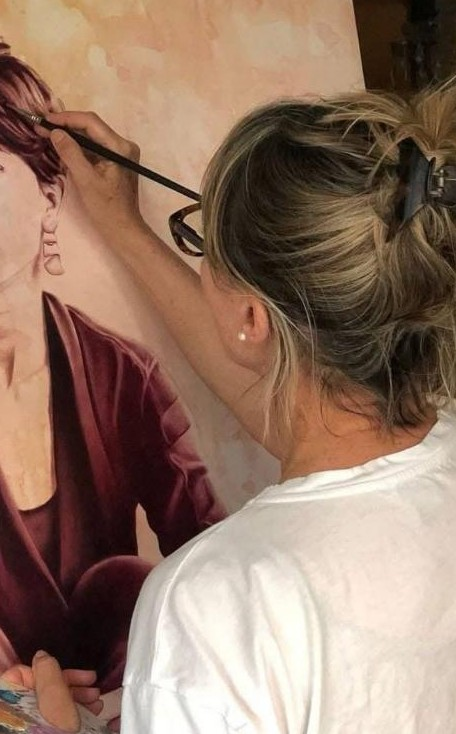

Arancha
Fundadora del taller
Fundó el taller de arte A. Lanchares. Con estudios en decoración, trabajó como decoradora y, más adelante, se dedicó a su pasión: la pintura y la enseñanza.
Hoy su academia, también galería, cuenta con más de 100 alumnos. Organiza workshops con artistas internacionales y exposiciones mensuales. Hace unos meses decidió sumar un segundo negocio vecino al taller: una tienda de arte, artesanía y complementos, tan escasas en la vida actual.